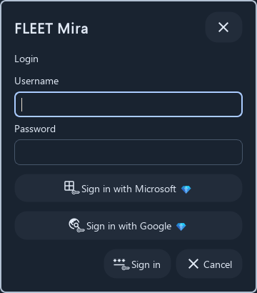
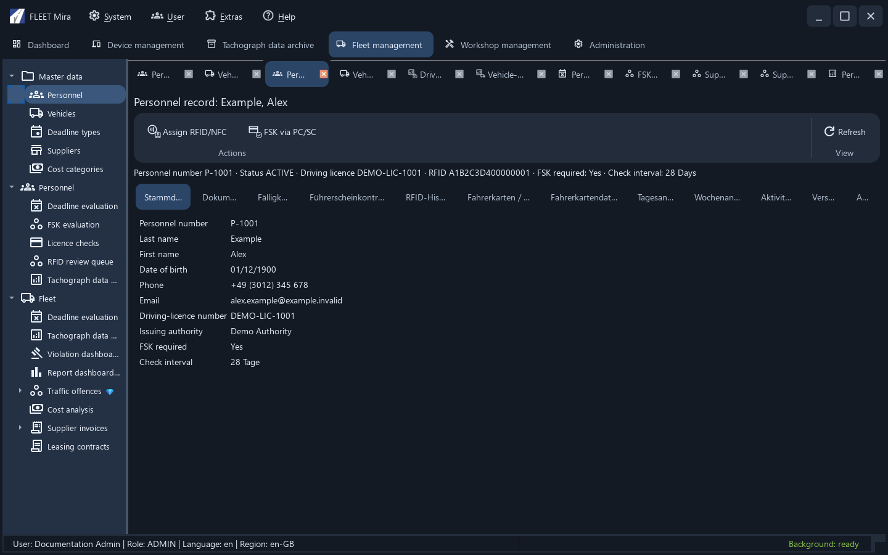
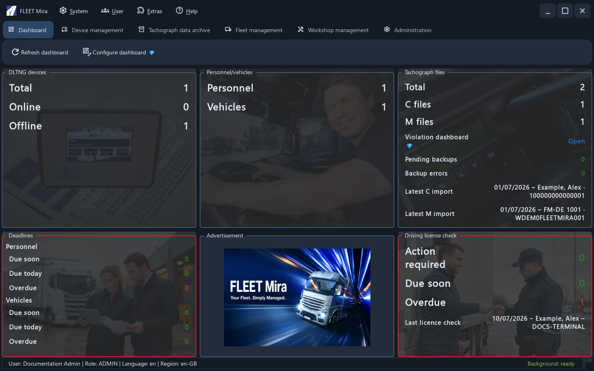
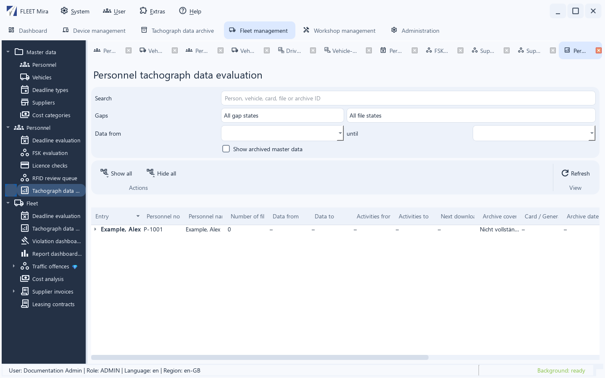
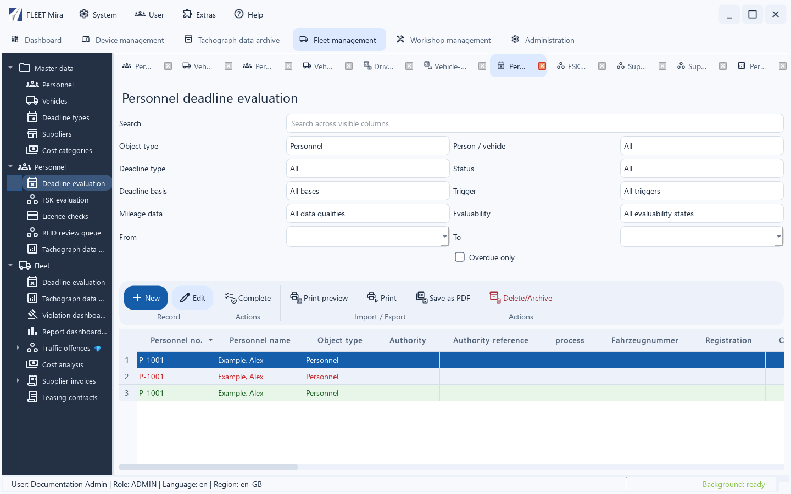
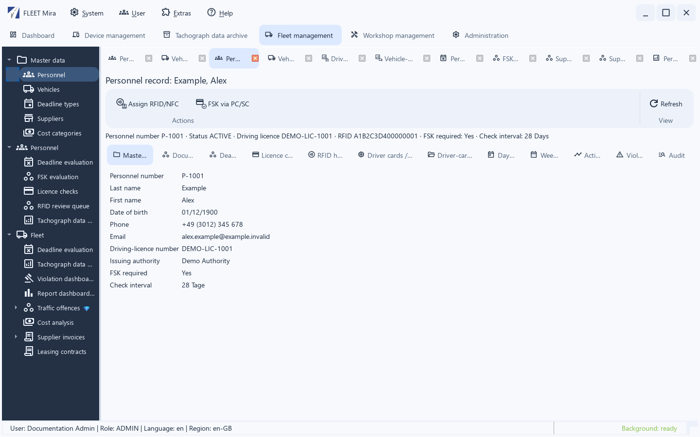
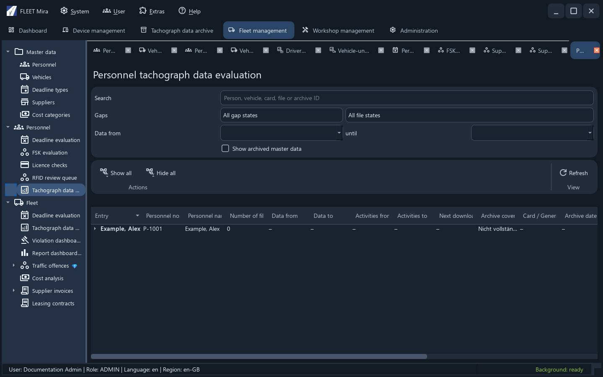
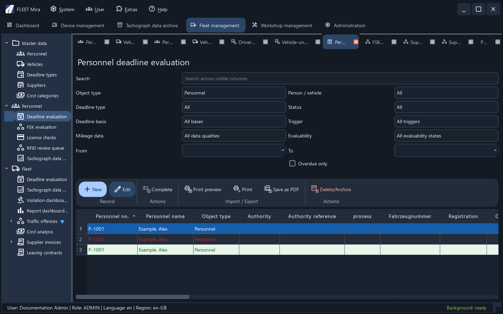

Material 3 client interface¶
Basic, Pro and Enterprise use the same native FleetMira interface with blue accents, dark navigation and shared Material symbols. Symbols ship with the application and require no internet connection. Permissions and licensing continue to determine which features are available.
Compact sign-in¶
The sign-in window has no native title bar. Drag its product-name header to move it; the close control, Cancel and Esc cancel sign-in. Enter submits the credentials. Enabled SSO providers and optional backup restoration remain available. Errors appear inside the window.

Enterprise tenants¶
Enterprise signs users in centrally and opens an authorized customer through tenant selection. Customer tenants are distinct from device/location groups and Microsoft Entra tenants. Set up and switch tenants.
Shared Material window bars¶
Client-owned main windows and dialogs use a Material window bar instead of the native Windows title bar. Drag the title area to move a window. Main windows and dialogs designed for it offer Minimize, Maximize or Restore window, and Close. Small dialogs and login only show their applicable actions. Double-click the title area to maximize an eligible window. Alt+Space or a title-area right-click opens its window menu.
Close preserves existing unsaved-change, cancellation and mandatory-input rules. Embedded work tabs do not gain extra title bars. File pickers use Qt presentation; external browsers and identity-provider windows remain separate.

Light and dark appearance¶
Open User → My profile and select Light or Dark under Appearance. Save applies the appearance immediately to all open views and saves it for your user account. Cancel discards the selection. The interface uses the dark appearance before sign-in and after sign-out, and whenever no preference has been saved. An explicitly saved Light preference remains available. Another user's selection does not affect your preference. Language and region are managed independently.
Navigation and workspaces¶
The dashboard is a direct primary page occupying the entire content area, without left navigation or an additional work tab. This is the explicitly requested exception to the other areas' navigation pattern.
Other primary areas have grouped navigation on the left and work tabs on the right. Work tabs start empty after a new sign-in. Select a navigation entry to open its overview. Opening an existing workspace activates its current tab. Tabs can be moved and closed; closed overviews remain available through navigation.
Menus, submenus, context menus and important actions display a symbol next to their text. The text remains the authoritative label. Navigation entries that your permissions do not allow are disabled; entries hidden by licensing remain hidden. Additional actions are available in the overflow menu in narrow windows.
In Device management, Open or a double-click on the normal device row opens its record in a separate work tab. Reopening the same record activates its existing tab. Individual URL, system-information and file actions remain available through their respective controls.
Analyze a single tachograph file¶
Analyze single file opens a new work tab for either M or C files in the Tachodata archive area, without a separate analysis window. Captions use the filename with the technical M: or C: prefix. Reopening the same file activates its existing tab and preserves the selected subview. Tabs can be moved and closed; reopening after closing reloads the file. The archive overview remains available.
Single-file analyses started from Fleet Management continue to use its work tabs. The archive.read permission remains required. Sign-out or loss of archive access closes the archive analysis tabs.
Examples¶
The dashboard uses the full content width without left navigation:

The following native views contain synthetic example data only. They show the appearance, not an installation or a production connection.
Tachodata evaluation¶
Search and filters are separated from the action area. Expandable vehicle, archive-file and archive-gap hierarchies are retained.

Deadline evaluation¶
Filters, record actions and the data table follow a shared structure. A selected row remains blue with white text even when status colours are present.

Personnel record and day view¶
The personnel record combines record-specific actions with its related views. The daily timeline and activity table retain their business colours; scrollbars and tab navigation remain available in small windows.

Additional dark views¶
Before authentication, the interface uses English. After sign-in, profile language and region apply; these workspaces show dark appearance.


Existing beta localization gaps
Some older field labels and report descriptions remain German even when the profile language is English. Screenshots deliberately show the actual beta interface. This documentation refresh does not change application localization or functionality.